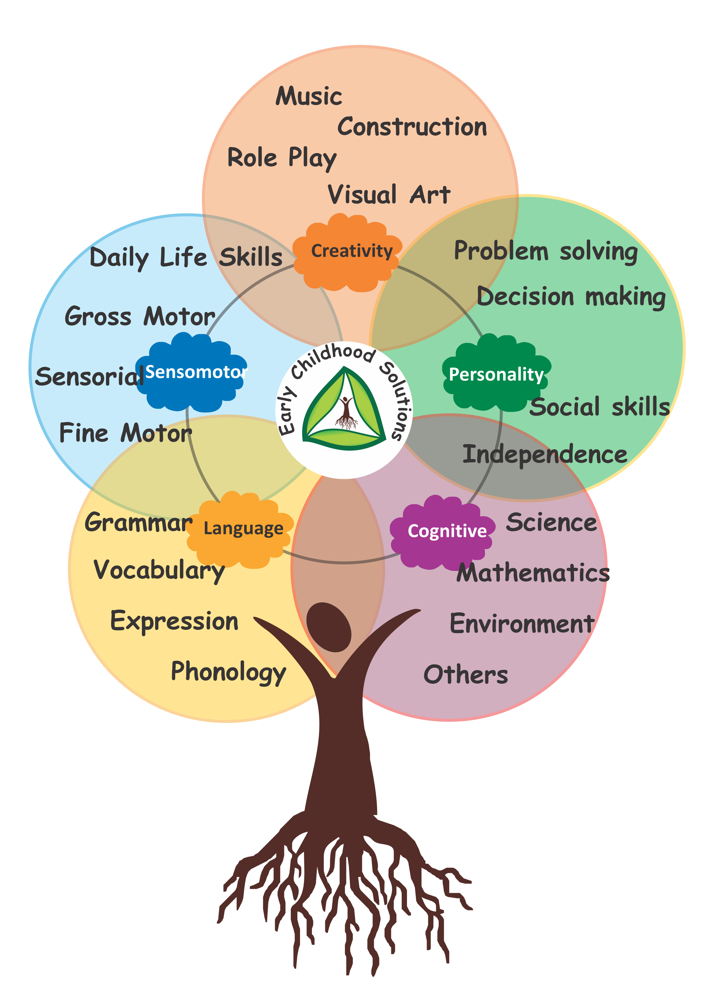

Early years (2 to 6) are a unique stage of phenomenal brain development and learning in a child. The capacity to absorb concepts and learn is highest during this phase. Hence it is important to expose the child to a structured environment which will provide adequate and appropriate stimulus for learning.
Amigos is a Spanish word for companion, a comrade. We at Little Amigos Preschool cherish our role to deliver joyful, child centric and developmentally appropriate learning experiences to our little comrades at this precious learning phase of their life.
We are committed to nurture children to reach their full potential by providing quality Early Childhood Education.

Playgroup- 2 to 3 years
Nursery- 3 to 4 years
The cornerstone of our curriculum is that we teach "individuals" not "classes". We set goals for individual child and tailor instructions to suit individual's need.
Our curriculum is well researched with multiple best practice methodologies integrated including Montessori, multiple intelligence theories, thematic approaches and more keeping the Indian academic context in mind.
Ours is a comprehensive child-centric curriculum where child learns through hands on experiences that are well integrated and multi sensory. We believe in all round development of child.
Our environment means the tools that we offer the child to learn.
It is well structured and planned with extreme care to facilitate self learning. Our educational aids are non toxic. The class rooms are child friendly with ample of light and fresh air.
Our external environment gives ample opportunities to child to explore Mother Nature, learn and grow. We have outdoor facilities like sand play and ball pit area, splash pool, outdoor play equipments and much more.
Our staff is trained to ensure that the curriculum objectives for each child are met consistently. They are trained to facilitate learning, observe, record and assess on a daily basis. We have an appropriate student - teacher ratio to ensure that every child's needs are met.
To ensure effective learning, the activities have been designed keeping the child in mind and ensuring there is "directional" play all the time. It would involve:
Our teachers constantly observes child and assesses them. We have a system that constantly checks on the child's progress and helps us keep updates and records about the child more efficiently. This helps us share information with parents also on a regular basis.